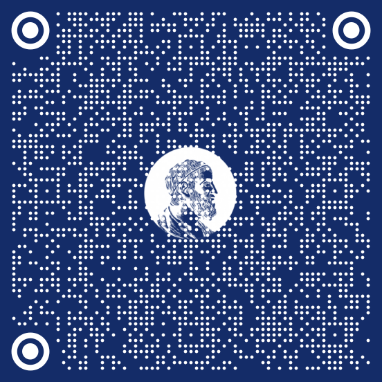

DEFESAS AGENDADAS
| Data | Horário | Local | Candidato(a) | Orientador(a) | Nível | Programa |
|---|---|---|---|---|---|---|
| 19/09/2022 | 14:00 | Online | Jackeline Conrado | Prof. Dr. Fabiano Gustavo Braga Brito | Doutorado | Matemática |
| 27/09/2022 | 14:00 | IQ | Jhonatas Siríno Monteiro | Prof. Dr. João Carlos Setubal | Doutorado | Bioinformática |
| 20/10/2022 | 17:30 | Online | Luísa Bürgel Borsato | Prof. Dr. Rodrigo Bissacot Proença | Doutorado | Matemática Aplicada |

www.ime.usp.br/defesas
DEFESA DE DOUTORADO
19/09/2022
14:00
Online

www.ime.usp.br/defesas
Jackeline Conrado
Superfícies minimamente imersas no fibrado tangente unitário da esfera Euclidiana que surgem de campos vetoriais unitários minimizantes de área na S2\{N,S}
Comissão julgadora
Prof. Dr. Fabiano Gustavo Braga Brito, IME-USP
Prof. Dr. Paolo Piccione, IME-USP
Prof. Dr. Álvaro Krüger Ramos, UFRGS
Prof. Dr. Giovanni da Silva Nunes, UFPEL
Prof. Dr. Sebastiao Carneiro de Almeida, UFC
Programa de Pós-Graduação em Matemática
DEFESAS AGENDADAS
| Data | Horário | Local | Candidato(a) | Orientador(a) | Nível | Programa |
|---|---|---|---|---|---|---|
| 19/09/2022 | 14:00 | Online | Jackeline Conrado | Prof. Dr. Fabiano Gustavo Braga Brito | Doutorado | Matemática |
| 27/09/2022 | 14:00 | IQ | Jhonatas Siríno Monteiro | Prof. Dr. João Carlos Setubal | Doutorado | Bioinformática |
| 20/10/2022 | 17:30 | Online | Luísa Bürgel Borsato | Prof. Dr. Rodrigo Bissacot Proença | Doutorado | Matemática Aplicada |
www.ime.usp.br/defesas
DEFESA DE DOUTORADO
27/09/2022
14:00
Sala de defesas
Bloco 6 superior - IQ
www.ime.usp.br/defesas
Jhonatas Siríno Monteiro
Investigações sobre os mecanismos moleculares da angiogênese com base em dados de expressão gênica num modelo murino, e sua aplicação no prognóstico do câncer de mama
Comissão julgadora
Prof. Dr. João Carlos Setubal, IQ – USP
Prof. Dr. David Corrêa Martins Junior, UFABC
Prof. Dr. Denis Moledo de Souza Abessa, UNESP
Prof. Dr. Eduardo Moraes Rego Reis, IQ-USP
Prof. Dr. Israel Tojal da Silva, FAP A.C. Camargo
Programa Interunidades de Pós-Graduação em Bioinformática
DEFESAS AGENDADAS
| Data | Horário | Local | Candidato(a) | Orientador(a) | Nível | Programa |
|---|---|---|---|---|---|---|
| 19/09/2022 | 14:00 | Online | Jackeline Conrado | Prof. Dr. Fabiano Gustavo Braga Brito | Doutorado | Matemática |
| 27/09/2022 | 14:00 | IQ | Jhonatas Siríno Monteiro | Prof. Dr. João Carlos Setubal | Doutorado | Bioinformática |
| 20/10/2022 | 17:30 | Online | Luísa Bürgel Borsato | Prof. Dr. Rodrigo Bissacot Proença | Doutorado | Matemática Aplicada |
www.ime.usp.br/defesas
DEFESA DE DOUTORADO
20/10/2022
17:30
Online

www.ime.usp.br/defesas
Luísa Bürgel Borsato
Lei Forte dos Grandes Números para sequências de Bernoulli e Medidas de Gibbs em subshifts com alfabetos finitos e infinitos
Comissão julgadora
Prof. Dr. Rodrigo Bissacot Proença, IME-USP
Prof. Dr. Bruno Hideki Fukushima Kimura, IF-USP
Profa. Dra. Florencia Graciela Leonardi, IME-USP
Prof. Dr. Paulo César Rodrigues Pinto Varandas, UFBA
Prof. Dr. Ricardo dos Santos Freire Junior, IME-USP
Programa de Pós-Graduação em Matemática Aplicada